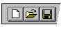
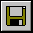
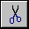
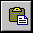
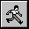
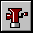
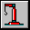
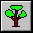
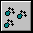

|
|
The toolbar is displayed across the top of the application window, below the menu bar. The toolbar provides quick mouse access to many tools used in Strawberry Prolog,
To hide or display the Toolbar, choose Toolbar from the Options menu (ALT, O, T).
Click To
 Create a new document.
Create a new document.
Open an existing document. Strawberry Prolog displays the Open dialog box, in which you can locate and open the desired file.
 Save the active document or template with its current name. If you have not named the document, Strawberry Prolog displays the Save As dialog box.
 Remove selected data from the document and store it on the clipboard.
Copy the selection to the clipboard.
 Insert the contents of the clipboard at the insertion point.
 Compile and execute the current file. If the compiler detects some error, during the compilation, it won't execute the program.
 Compile the current file.
 Build an EXE file from the active program.
Execute your program step by step. You can see the execution progress in the Proof Tree window.
 Show the Proof Tree window.
 Print the active document.
Print the active document.
Preview your document before printing it.
Show the About dialog box.
Use the context Help feature. The mouse pointer will change and, pointing at some program feature or menu command, the correlated help page will be shown.
 Stop program execution, in order to detect the step involved, and put a break point (Trace freature).
Stop program execution.